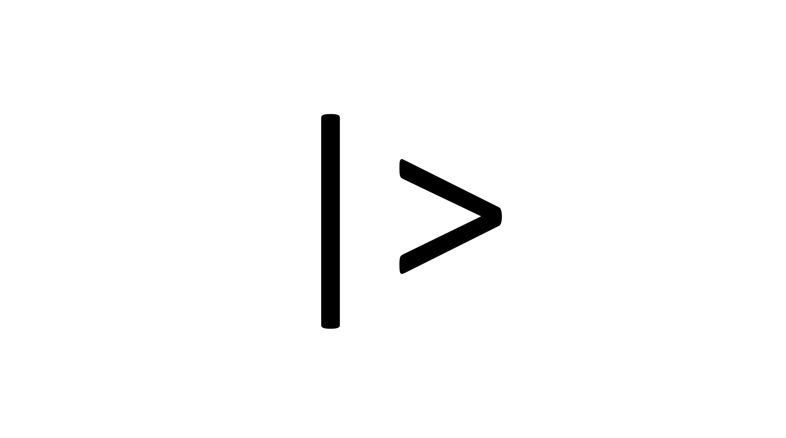

library(stats)6 Tidyverse의 이해
앞서 R이 기본적으로 제공하는 간단한 문법을 배워보았는데요, 그러면서도 앞으로 해당 기본 문법보다는 일종의 ‘대체 문법’을 사용할 것이라는 언급을 여러번 했습니다. 그 대체문법이 이 장에서 배울 “Tidyverse” 문법 입니다. 사실 “Tidyverse”가 대체문법이라고 하는 데에는 좀 어폐가 있습니다. “Tidyverse” 문법을 따른다고 하더라도, R이 가지고 있는 변수, 함수, 데이터 타입, 데이터 구조 등이 ’거의’ 그대로 사용되기 때문입니다. 다만, 세브세팅이나, 새로운 변수의 생성, 긴 코드의 작성을 편하고 일관되며, 가독성 있게 만들기 위해서 도입된 일종의 코딩 ‘스타일’ 또는 ‘패러다임’ 이라고 부르는 것이 더 나을지도 모르겠습니다.
하지만, 그러한 ’스타일’을 위해서는 R이 기본적으로 제공하지 않는 몇 가지 함수가 필요합니다. R이 기본적으로 제공하지 않는다면, 어떻게 한다는 것일까요? 이를 위해서 우리는 ’패키지’라는 개념부터 알아야 합니다.
6.1 패키지 개념 이해하기
R뿐만 아니라, 많은 다른 언어에서 ’패키지’라고 하는 것은 쉽게 말하자면 유용한 함수들의 묶음을 의미합니다. 기본 R을 설계한 사람들이 R에 내장해두지는 않았지만, 특정 목적을 위해서는 유용함 도구들이 묶여서 ’패키지’로 제공된다고 생각하면 되겠습니다. 비유하자면, 여러분들이 매일 사용하는 ’카카오톡’이 R이라고 해 보죠. 카카오톡 안에는 기본적인 채팅 기능 안에도 수많은 다른 기능들이 있지요? 선물을 주고 받을 수도 있고, 음식을 주문할 수도 있고, 쇼핑을 할 수도 있습니다. 물론 모든 이용자들이 이 기능들을 모두 사용하지는 않지요. 하지만, 어떤 사람들은 자주 사용합니다. 이러한 세부 기능에 해당 하는 일종의 카카오톡 안의 ’미니 프로그램’을 R에서는 패키지라고 부른다고 생각하면 되겠습니다.

R에서 패키지를 부르는 방법은 다음과 같습니다.
library()는 괄호가 있으니, 패키지를 부르는 ’함수’일 것이고, 괄호 안에는 부르고 싶은 패키지의 이름을 따옴표 없이 쓰면 됩니다. 여기서는 R을 설치할 때 같이 설치되는 stats라는 패키지를 불렀습니다.
그런데 R이 설치될 때 모든 패키지가 함께 설치되는 것은 아닙니다. 사실 그렇지 않은 패키지가 훨씬 많지요. 심지어 패키지는 여러분도 만들 수 있습니다. 그렇게 개인이 여러 목적으로 만든 비공식 패키지까지 포함한다면, 세상에는 무한히 많은 R 패키지들이 있습니다. 하지만, 우리가 자주 사용하게될 패키지는 R개발진들의 관리 감독 아래 있는 ‘공식’ 패키지들입니다. 공식 패키지이지만, R과 함께 설치되지 않는 패키지를 설치하기 위해서는 다음과 같은 함수를 실행시키면 됩니다 (여기서는 따옴표가 필요합니다!).
install.packages("tidyverse")예, 우리가 사용한다고 했던 바로 그 tidyverse 입니다. tidyverse 문법을 이용하기 위해서 몇 가지 추가적인 함수가 필요하다고 했지요? 이렇게 설치된 tidyverse 패키지 안에 우리가 사용하고자 하는 바로 그 함수들이 포함되어 있습니다.
물론, 설치만 한다고 해서 바로 이 패키지를 사용할 수 있는 것은 아닙니다. 아까 stats 패키지의 예에서처럼, tidyverse 패키지도 다음과 같이 불러주어야 합니다.
library(tidyverse)이 함수를 실행시키면 tidyverse 문법을 사용할 준비가 된 것입니다.
6.1.1 패키지 사용시 주의사항: 설치? 로드?
방금 tidyverse 패키지를 설치하고 불러왔는데요, 여기서 패키지를 ’설치’한다는 것과 ’불러온다’는 것의 의미에 대해 잠깐 생각해볼 필요가 있습니다.
여러분이 일상적으로 윈도우 또는 맥OS 상에서 어떤 소프트웨어를 ‘설치’하면 그것은 어디에 저장되었다는 것을 의미하나요? 당연히 HDD, SSD와 같은 ’저장장치’ 입니다. 그래야, 컴퓨터를 껐다 다시 키더라도, 다시 ’설치’할 필요가 없을테니까요. tidyverse 패키지를 설치했다는 것도 비슷한 의미입니다. 설치한 패키지는 저장장치 어디엔가 저장되어 있습니다.
따라서, 설치는 한 번 했다면 다시 할 필요가 없습니다.
그런데 여러분 설치한 소프트웨어가 항상 켜져있나요? 물론 아닙니다. 그 소프트웨어를 실행시켜야지요. 실행시킨다는 것은 뭘까요? 여러 의미가 있지만, 가장 기본적으로는 저장장치에 설치되어 있는 해당 프로그램을 컴퓨터 메모리 상에 ’불러온다’는 것입니다. 가끔 여러분들 너무 많은 소프트웨어를 동시에 열어두면 컴퓨터가 느려져서 몇몇 사용하지 않는 프로그램을 꺼야했던 경험이 있을 것입니다. 프로그램을 껐다는 것은 반대로 메모리에서 지운다는 것을 의미하겠지요. 따라서 메모리에 여유 공간을 조금 확보하려고 프로그램을 끄는 것입니다. 이렇게 프로그램을 켠다는 것은 R 패키지로 치면 패키지를 로드하는 과정과 유사합니다.
아까의 예에서처럼 library(tidyverse)라는 함수를 실행시키면, 저장장치에 저장되어 있던 tidyverse 패키지가 메모리로 불러와집니다. 그런데 메모리는 어떤 특성을 가지고 있었나요? 컴퓨터를 꺼도, 해당 정보에 할당된 이름이 사라져도, 메모리에서 언제든 사라질 수 있습니다. 이것은 무슨 이야기일까요? 여러분들이 Rstudio를 끄는 순간, 또는 Rstudio 안에서 다른 프로젝트로 이동하는 순간, 불러왔던 패키지는 메모리에 존재하지 않는 것이 됩니다. 그러니,
패키지를 불러오는 것은
Rstudio를 새로 켤 때마다, 또는 새로운 프로젝트로 이동할 때마다, 매번 다시 해야 합니다!
또 한 가지, 여러분들에게 당장 자주 일어나지는 않을 일이지만, 여러 개의 패키지를 로드해서 사용하다보면 간혹 생기는 문제가 있습니다. 바로 다른 두 개의 패키지가 하나의 함수명을 공유하고 있는 경우 입니다. 예컨대, MASS라는 패키지에도 select()라는 함수가 있고, tidyverse 패키지에도 select() 함수가 있습니다. 기능도, 문법도 완전히 다르지요. 따라서, 후자를 생각하고 select() 함수를 썼다가 에러가 발생하는 경우가 있습니다. 여러 방법이 있지만, 이럴 때에는 tidyverse::select()라고 써 주세요. 그러면, tidyverse 패키지에 속하는 select() 함수를 사용하게 됩니다.
6.2 Tidyverse 처음 사용하기
이제 겨우 tidyverse 문법을 사용할 준비가 되었습니다. 물론 tidyverse 패키지의 설치와 불러오기를 잊지 마세요! 사실 tidyverse는 많은 다양한 코딩 방식, 시각화 방식, 데이터 타입과 구조에 대한 재정의 등을 포함한 광범위한 코딩 패러다임인데요, 우리는 학습 목적상 다음 두 가지에만 주목하려고 합니다.
- 서브세트
- 파이프(pipe)
그 외에 tidyverse의 다른 요소들은 학습이 심화되면서 차차 마주하게 될 것입니다.
첫번째, 서브세트는 우리가 앞장에서 이미 보았던 서브세트, 즉, 데이터의 일부만을 취하는 방법입니다. R은 이미 좋은 서브세트 기능을 제공하지만, 앞서 말했듯 해당 문법이 가독성이 아주 좋지는 않다고 했습니다. 따라서 tidyverse에서 제공하는 방식의 서브세트를 이용할 것입니다. 두번째 ’파이프’는 긴 코드를 연결해서 간결하게 작성하는데 필요한 일종의 코드 작성법 입니다. 차례차례 살펴보지요.
6.2.1 서브세트
tidyverse의 서브세트는 기본적으로 R 데이터구조 중 데이터프레임에 적용되는 것입니다. 벡터나 리스트를 사용할 때에는 기본 R 문법을 사용하면 됩니다. 데이터프레임을 서브세트 하는 방법에는 행을 취하는 방법과 열을 취하는 방법이 있었습니다. 다음을 기억해 두세요. tidyverse에서는:
- 열을 취할 때에는 항상
select()함수와 열의 ’이름’을 사용합니다. - 행을 취할 때에는 항상
filter()함수와 행을 취하는 ’조건’을 사용합니다.
이것만 이해하면 거의 모든 것을 이해한 것과 다름 없습니다. 일단, tidyverse 서브세트는 데이터프레임에 관한 것이라고 했으니, 일단 앞서 이미 이용했던 것고 같은 데이터 프레임을 다시 만들어 예제 데이터로 이용해 보지요.
df <- data.frame(id = c(1, 2, 3),
gender = c("Male", "Female", "Female"),
height = c(173, 165, 170))
df id gender height
1 1 Male 173
2 2 Female 165
3 3 Female 170열을 취할 때는 select() 함수와 열의 이름을 사용한다고 했으므로, 다음과 같이 씁니다.
select(df, gender) gender
1 Male
2 Female
3 Female즉, select() 함수의 첫번째 인수는 서브세트의 대상이 될 데이터프레임(df), 두번째 인수는 거기서 선택할 열의 이름(gender)입니다. 그런데, 사실 복수의 열을 선택할 수도 있습니다.
select(df, gender, height) gender height
1 Male 173
2 Female 165
3 Female 170즉, 인수로 열의 이름을 그냥 나열하면 된다는 것입니다.
행을 취할 때는 filter() 함수와 행을 취할 조건을 사용한다고 했습니다. ’조건’이라는 말을 앞장에서 보았지요? 바로 TRUE, FALSE를 뱉어내는 R에게 질문하는 방식이라고 설명했던 바로 그 조건 입니다. 따라서, 키가 170이 넘는 사람에 관한 행만을 취하고 싶다면, 다음과 같이 쓰면 됩니다.
filter(df, height >= 170) id gender height
1 1 Male 173
2 3 Female 170filter() 함수의 첫 인수 역시 데이터프레임이고, 그 인수로는 조건이 옵니다. 그렇다면 두 개의 조건을 사용할 때는요? 그 때는 두 개의 조건이 AND 관계인지, OR 관계인지를 밝혀야 합니다. 그 관계를 밝히는 기호는 다음고 같습니다.
AND: 조건1 & 조건2
OR: 조건1 | 조건2
이제 다음과 같은 예를 보세요.
filter(df, height >= 170 & gender=="Female") id gender height
1 3 Female 170이것은 여성’이고(AND)’ 키가 170 이상인 사람에 해당하는 행을 돌려달라는 것이겠지요? 반면,
filter(df, height >= 170 | gender=="Female") id gender height
1 1 Male 173
2 2 Female 165
3 3 Female 170이것은 여성’이거나(OR)’ 키가 170 이상인 사람에 해당하는 행을 돌려달라는 것이겠지요? 이는 데이터 전체에 해당하네요.
6.2.2 파이프
파이프는 코드를 길게 써야 할 때 필요한 사용하는 코딩 스타일 입니다. 파이프를 위해서는 ’파이프’로 불리는 기호가 하나 필요합니다. 바로 다음 기호 입니다.

이 간단한 기호가 어떻게 긴 코드를 작성하는데 도움을 준다는 것일까요?
위의 그림에서 볼 수 있는 것처럼, 파이프는 함수의 첫 번째 인수를 함수의 왼쪽에 쓸 수 있게 해줍니다. 이제 데이터에 함수를 두 번 연속적으로 적용해야 하는 경우를 생각해 볼까요? 일반적인 문법에서는 우리가 중학교 수학 시간에 배운 것과 같이 다음과 같이 쓰면 됩니다.
do_this_next(do_this_first(data))이를 조금 풀어서 설명하면, 원 데이터(data)에 do_this_first() 함수를 먼저 적용하고, 그 결과에 do_this_next() 함수를 적용하는 것이지요. 물론 이렇게 써도 아무 문제가 없습니다. 하지만, 이런 방법에는 큰 문제가 있습니다. 바로 코드를 오른쪽에서 왼쪽으로 읽어야 한다는 것이지요. 이는 우리가 자연스럽게 글을 읽는 방식과 반대입니다. 사실, 이렇게 함수가 두 개 뿐이라면 큰 문제가 아니겠지만, 함수가 더 많아지면 가독성이 더욱 떨어집니다.
finally_do_this(then_do_this(do_this_next(do_this_first(data))))현실적으로는 함수를 십수개 차례대로 적용해야 하는 경우도 많으니, 이러한 방식의 코드는 나중에 스스로가 리뷰하기도 어려울 뿐더러, 협업 상황이라면 상황은 더욱 악화됩니다. 그래서 전통적으로는 이런 방식의 코드를 많이 사용해 왔습니다.
data2 <- do_this_first(data)
data3 <- do_this_next(data2)
data4 <- then_do_this(data3)
finally_do_this(data4)즉, 함수를 실행하고 그 결과를 변수로 저장한 다음, 다음 함수에 해당 변수를 인수로 사용하는 방식이지요. 읽기 조금 수월한가요? 어느 정도는 괜찮습니다. 하지만, 이것도 결코 읽기 쉬운 코드라고 할 수는 없습니다. 또 그 내용을 알기 어려운 data2, data3, data4 등의 불필요한 데이터들이 계속해서 생성됩니다. 이 역시 가독성을 낮출 뿐더러, 불필요하게 메모리를 차지하게 됩니다. 데이터의 이름을 조금 더 이해하기 쉽게 만들면 좋겠지만, 이렇게 데이터 처리 와중에 생긴 데이터에 모두 이름을 붙일만한 의미가 있는 것도 아니고, 데이터 이름을 자꾸 만들다보면, 더 이상 이름을 만들 아이디어도 떠오르지 않게 됩니다(이건 농담이지만, 진담이기도 합니다!).
우리가 파이프를 쓴다면 다음과 같이 쓸 수 있습니다.
data |>
do_this_first() |>
do_this_next() |>
then_do_this() |>
finally_do_this()이 코드를 잘 보면 항상 파이프 왼쪽에서 발생한 결과가 다음 함수의 투입값(input)이 됩니다. 이 코드는 우리가 글을 읽는 방식과 동일한 순서에 따라 쓰여졌기 때문에 읽기 쉬울 뿐더러, 필요 없는 중간 단계의 데이터(data2, data3 따위)도 만들지 않았습니다. 우리는 앞으로 연속해서 함수를 적용해야 할 때, 위의 예와 같이 파이프를 사용할 것입니다. 여러분도 가능한 위의 코딩 스타일을 사용하도록 노력해 보세요!
6.2.3 (3) 서브세트와 파이프를 동시에!
이제 tidyverse 문법의 주요 구성 요소라고 말한 서스세트와 파이프를 결합해 보겠습니다. 이제 앞서 사용했던 예에서 특정 열을 선택하고, 또 어떤 조건에 따라 행도 선택한다고 해 보지요. 그러면 다음과 같이 쓸 수 있을 것입니다.
df |>
filter(height >= 170 & gender=="Female") |>
select(gender, height) gender height
1 Female 170코드를 잘 살펴보면 그 의미는 다음과 같습니다.
- 원데이터
df에서 키가 170이 넘고, 여성인 행의 데이터를 취하라.- 그런 다음,
gender,height칼럼만 표시하라.
파이프를 썼기 때문에, filter() 함수와 select() 함수 안에는 데이터가 인수로 들어가지 않는다는 것에 주목하세요! 파이프를 사용하면 서브세트 할 데이터는 두 함수 앞에 사용한 파이프의 왼쪽에 있게 됩니다!
다음 내용으로 넘어가기 앞서, 위의 코드를 꼭 이해해야 합니다! 여러분은 이 책을 모두 읽을 때까지 비슷한 코드를 수십번 보고, 사용하게 될테니까요.